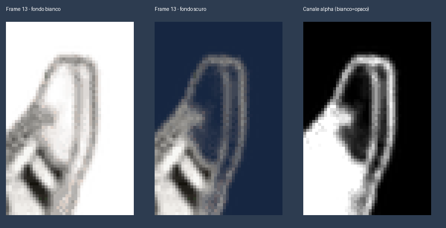
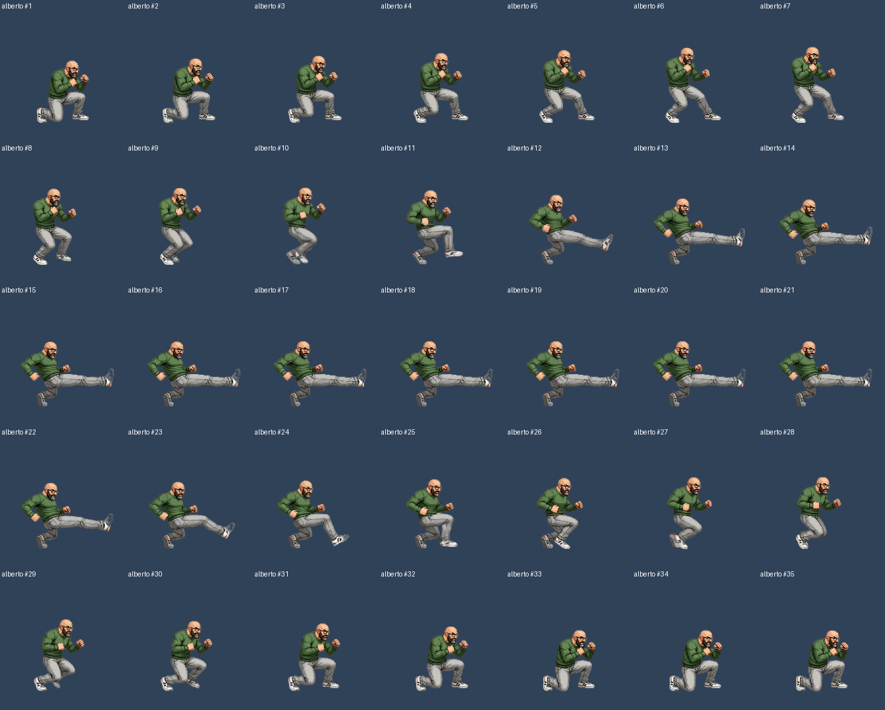
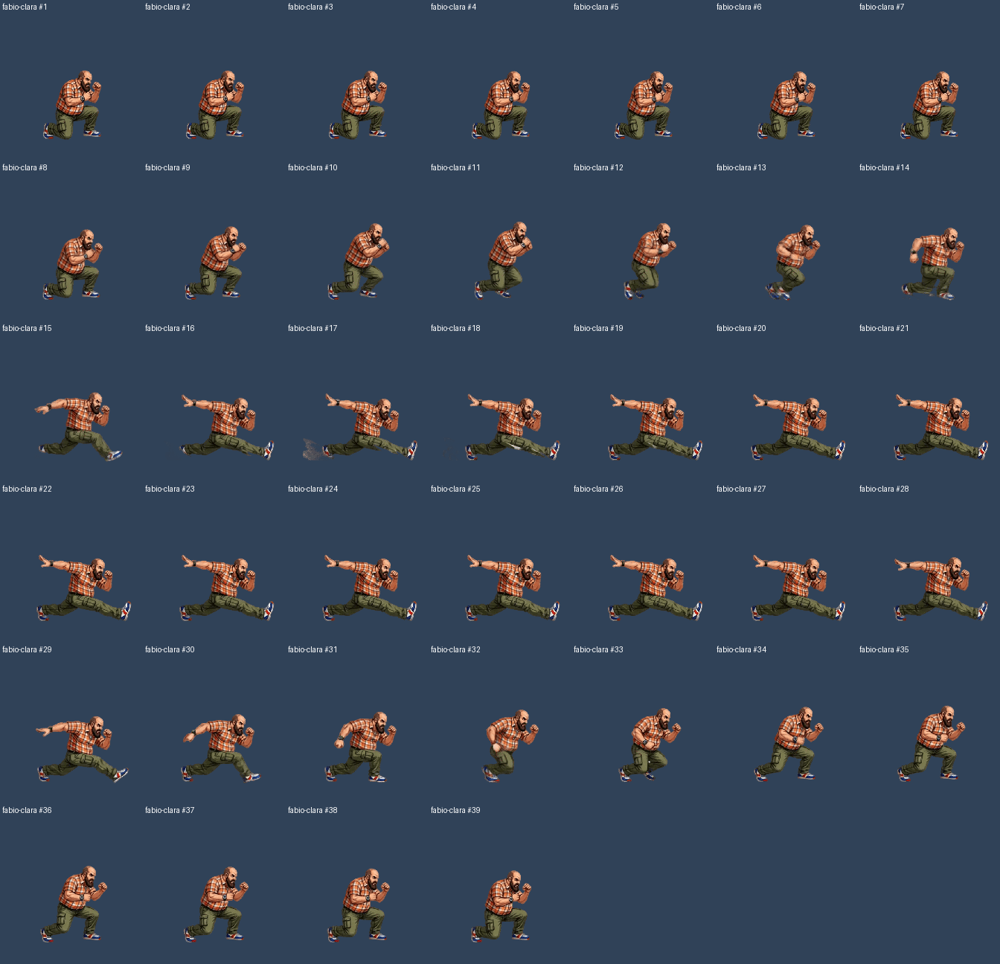
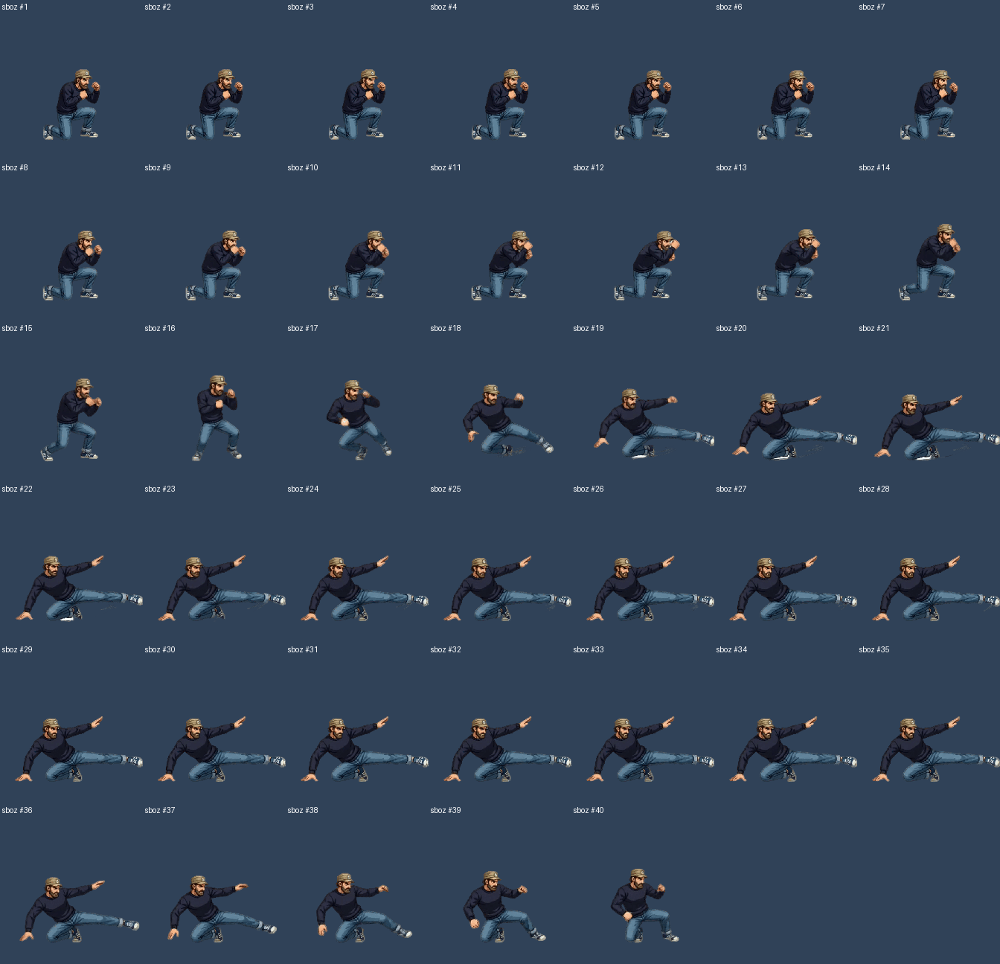
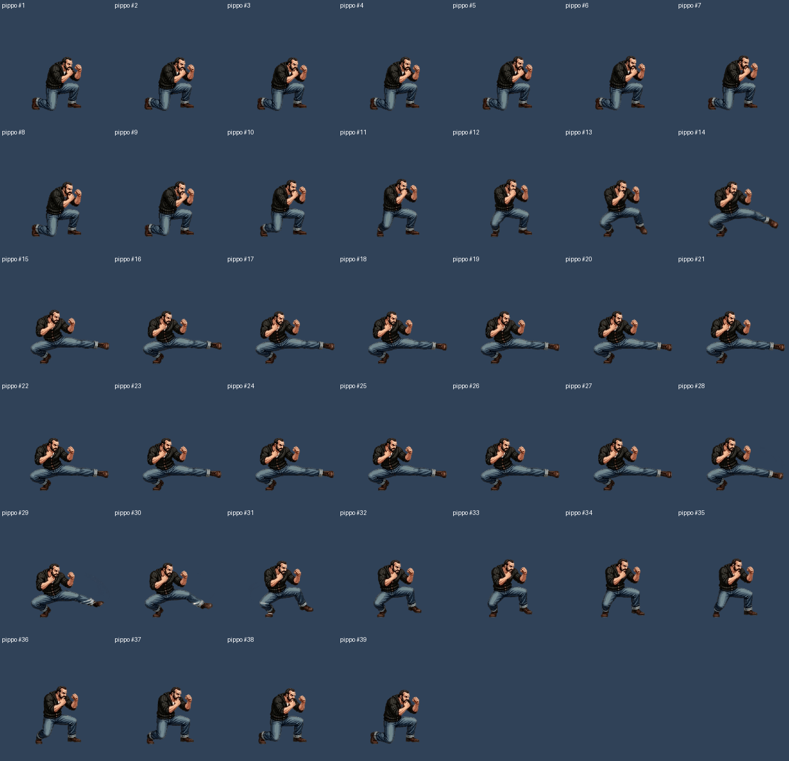
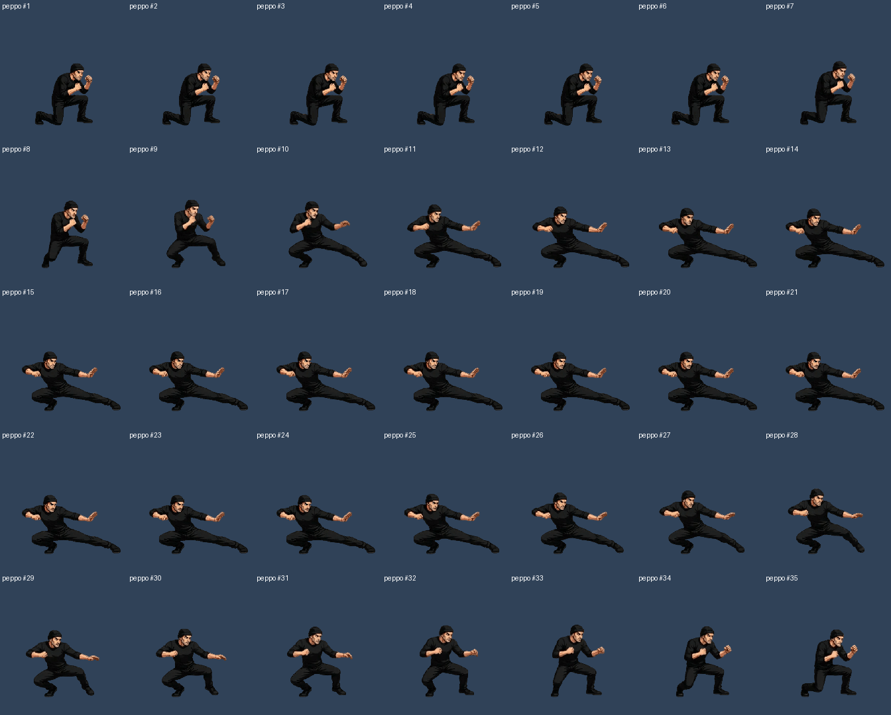
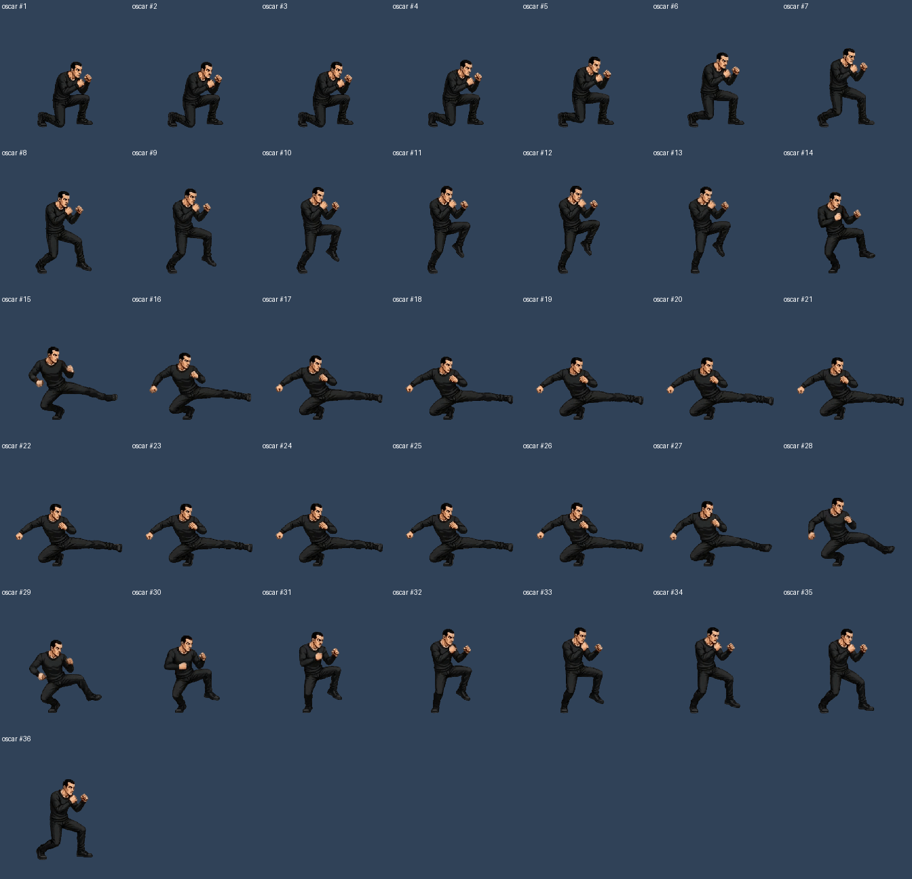
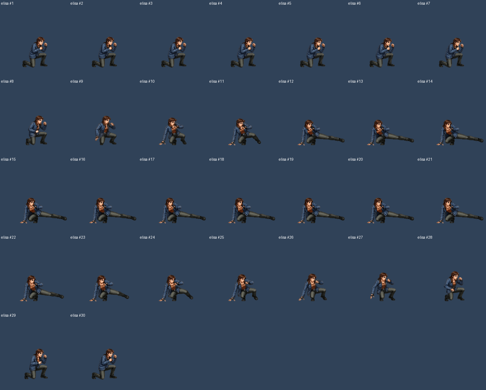
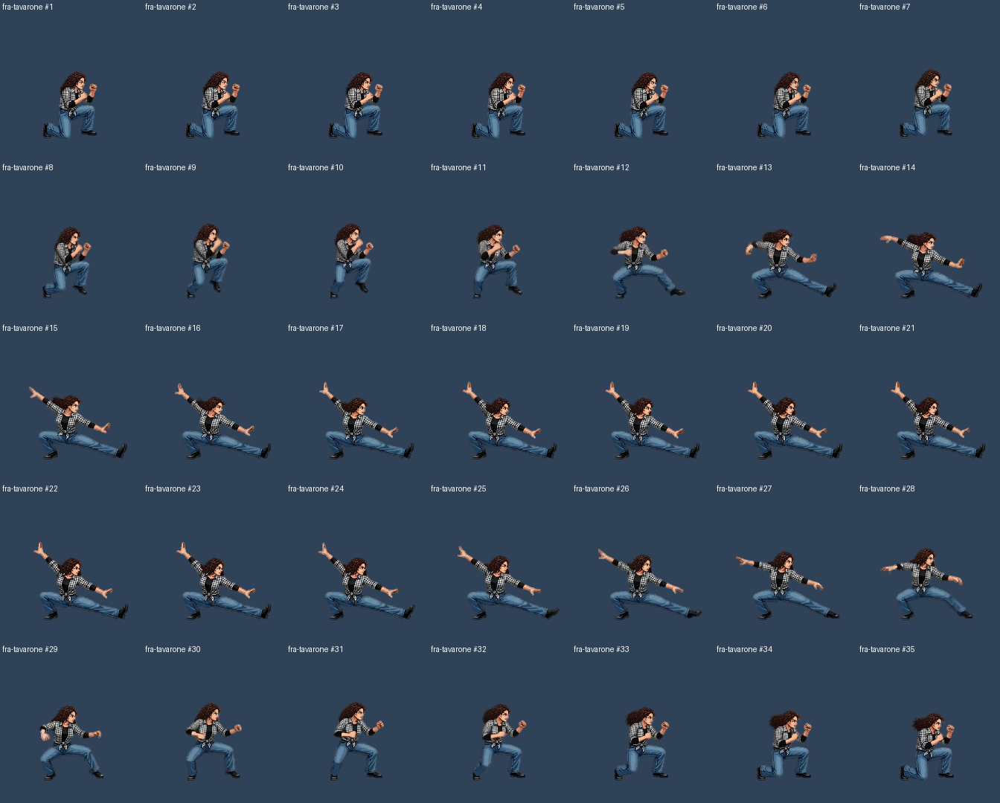
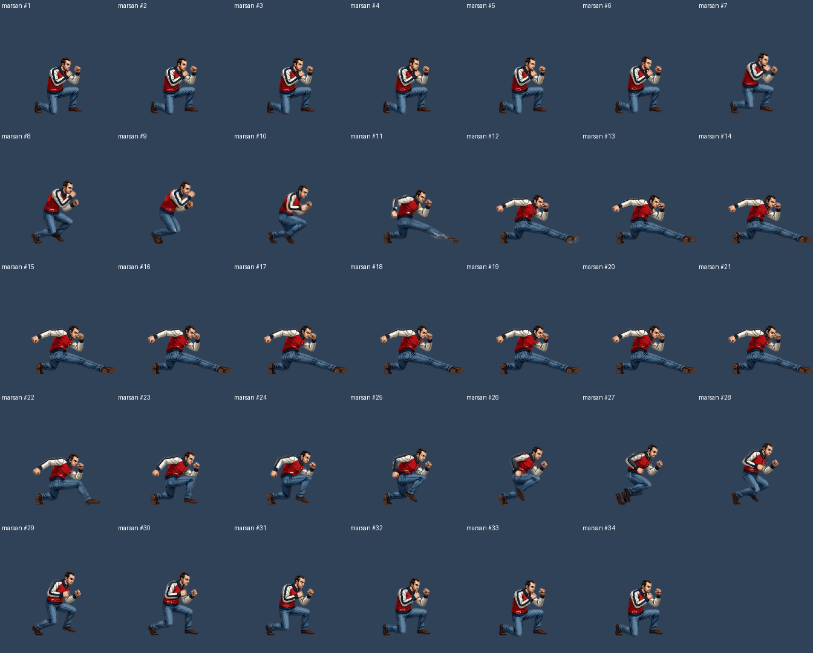

Difetto successivamente corretto: il controllo sotto documenta la situazione prima del ritocco. Apri la riparazione e il confronto prima/dopo.
23 novembre 2026. Esaminati i 323 fotogrammi delle versioni attualmente integrate per tutti i nove personaggi. Scansione dei pixel alpha e dei gruppi bianchi, seguita dal confronto visivo delle sequenze e dei casi sospetti. Nessun PNG modificato.
Difetto confermato: Alberto, punta della scarpa che esegue il calcio. La parte interna risulta semitrasparente durante l’estensione: l’ingrandimento mostra il frame 13 della sequenza attuale (numerazione da 1). Il fondo resta visibile dentro la scarpa; non è una scia. La suola grigia del piede arretrato è invece opaca e va conservata.

Negli altri otto personaggi non sono emerse trasparenze difettose evidenti nei fotogrammi e candidati esaminati. Non sono stati osservati riempimenti bianchi impropri tra gambe, braccia, testa e busto. Scarpe e dettagli chiari, maniche di Marsan, trama delle camicie, polvere e scie sono stati distinti dai difetti. La valutazione visiva e le soglie automatiche non garantiscono l’assenza di ogni minimo artefatto.
Esito, versioni e SHA-256 · Risultati della scansione per frame · Timing della mossa
| Personaggio | Frame | Trasparenze | Bianchi |
|---|---|---|---|
| ALBERTO | 35 | Trasparenza confermata sulla punta della scarpa che calcia | Bianchi coerenti con scarpe/abiti/effetti |
| FABIO-CLARA | 39 | Nessun difetto evidente nei fotogrammi e candidati esaminati | Bianchi coerenti con scarpe/abiti/effetti |
| SBOZ | 40 | Nessun difetto evidente nei fotogrammi e candidati esaminati | Bianchi coerenti con scarpe/abiti/effetti |
| PIPPO | 39 | Nessun difetto evidente nei fotogrammi e candidati esaminati | Nessuna componente bianca sospetta rilevata |
| PEPPO | 35 | Nessun difetto evidente nei fotogrammi e candidati esaminati | Nessuna componente bianca sospetta rilevata |
| Oscar | 36 | Nessun difetto evidente nei fotogrammi e candidati esaminati | Nessuna componente bianca sospetta rilevata |
| Elisa | 30 | Nessun difetto evidente nei fotogrammi e candidati esaminati | Nessuna componente bianca sospetta rilevata |
| FRA-TAVARONE | 35 | Nessun difetto evidente nei fotogrammi e candidati esaminati | Nessuna componente bianca sospetta rilevata |
| MARSAN | 34 | Nessun difetto evidente nei fotogrammi e candidati esaminati | Bianchi coerenti con scarpe/abiti/effetti |
Numeri dei frame da 1. Aprire le immagini per ingrandire.








